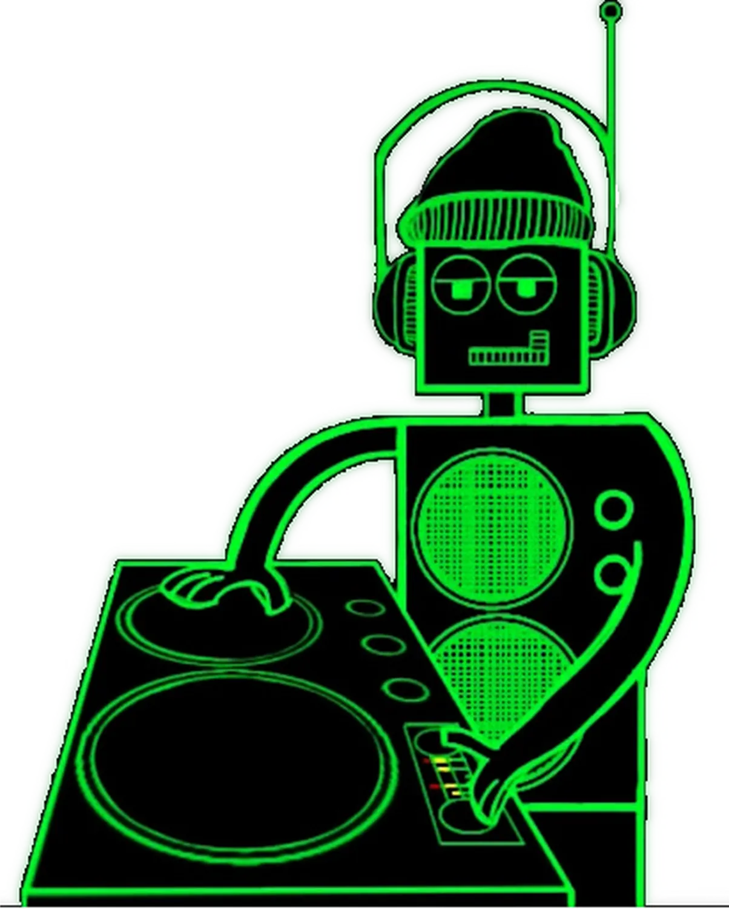
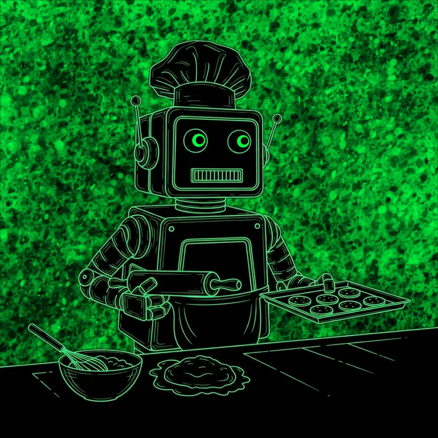
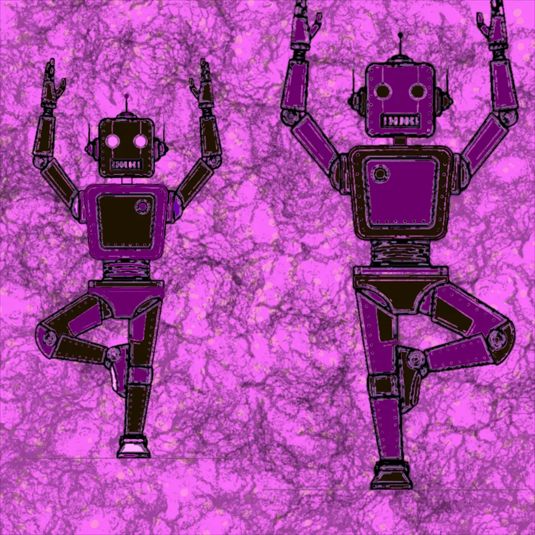
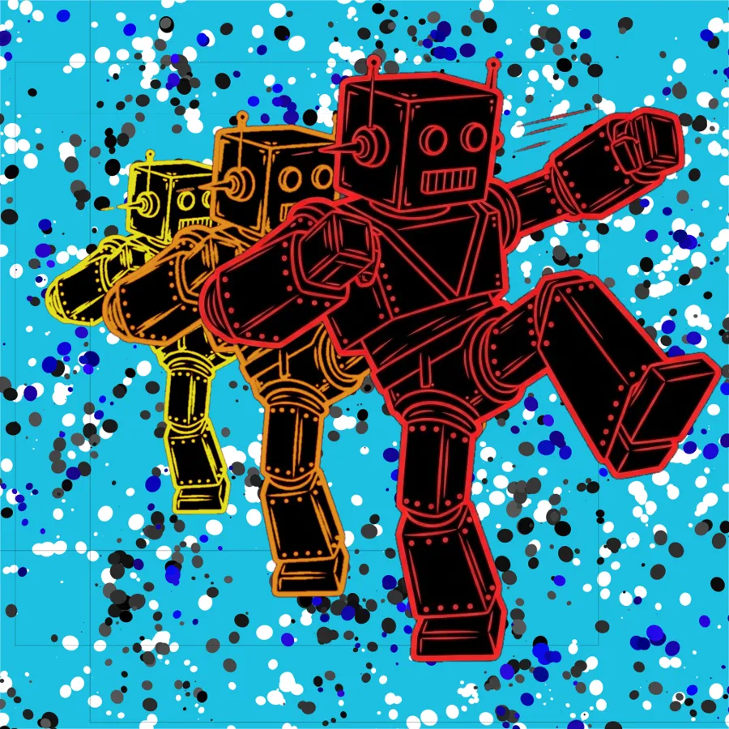
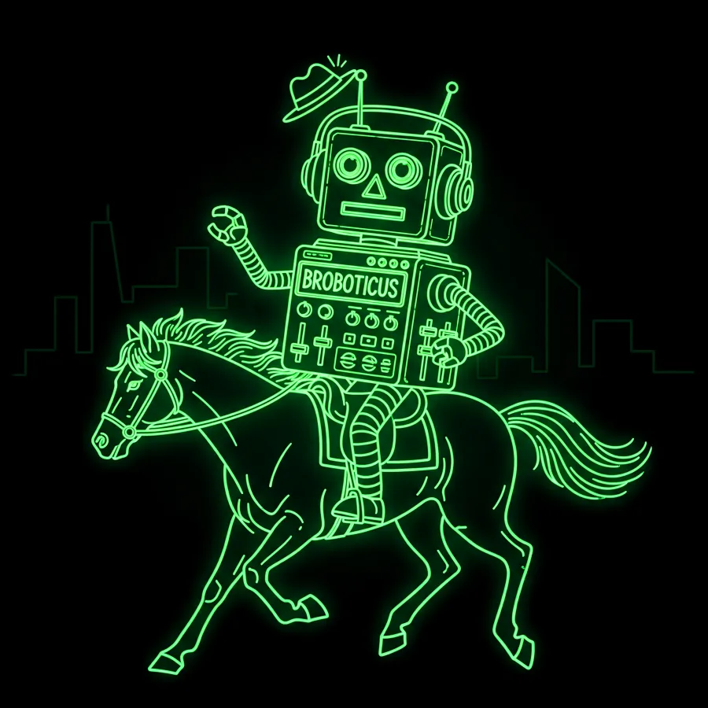
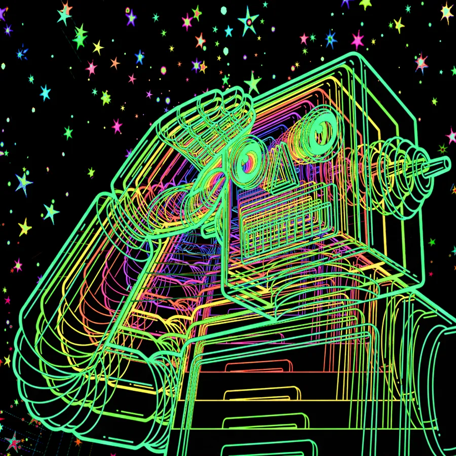
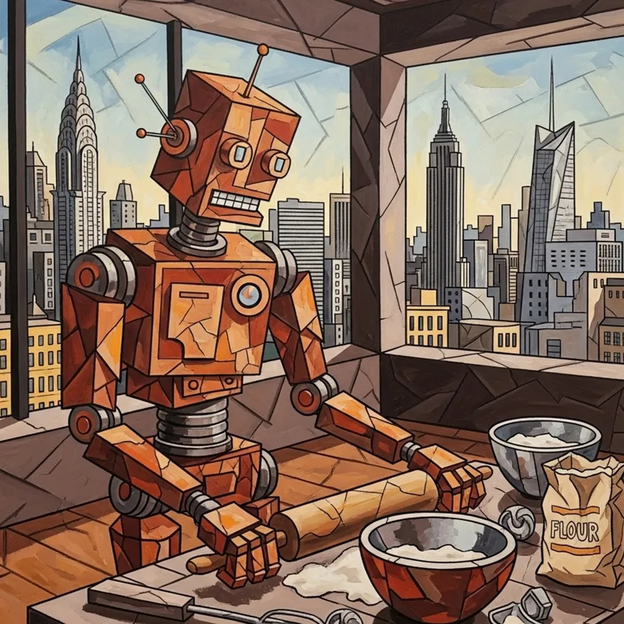

BROBOTICUS
ROBOTIC LEISURE & ACCLIMATION TO HUMAN SOCIETY

The First Transmission
In 2025, an Instagram contest called March of the Robots issued a simple directive: draw a robot. What BasicGlitch drew instead was a character — beanie on, headphones on, hands at the decks, rendered in single-weight neon green on absolute black. No background. No context. Just the character, fully formed in his first appearance, already doing exactly what he was always going to do.
The contest gave him a reason to exist. The drawing gave him everything else.
His name is Broboticus. He is the subject of Case Study 42: Robotic Leisure and Acclimation to Human Society — an ongoing archive of field reports documenting what happens when a robot decides to try everything.
"He wasn't designed to fit in. He was designed to figure out what fitting in even means — and then do it at maximum commitment."
— BasicGlitch, on the character's operating philosophy
FIELD_REPORT_00 — ORIGINAL DRAWING — MARCH OF THE ROBOTS 2025
Known Specifications
The following data has been extracted from available field reports and visual documentation. Some fields remain contested. The research team notes that Broboticus has not cooperated with formal measurement attempts.
| DESIGNATION | Broboticus (also: Brobarticus, Brobassicus, Chefboticus, Balletboticus, Fishboticus, Ranchboticus, Karateboticus — context dependent) |
| CASE STUDY NO. | 42 |
| FIRST DOCUMENTED | March of the Robots, 2025 |
| HEAD UNIT | Square chassis. Dual circular optical sensors. Integrated speaker grille. Antenna. Beanie (permanently attached — origin unknown). |
| CHEST PANEL | Variable. Documented configurations include: turntable/vinyl playback system, DJ mixer with faders, broadcast radio unit, cooking apparatus interface, ON AIR indicator. |
| HEADPHONE STATUS | Always present. Always on. |
| DOMINANT COLOR | Neon green (#00ff3e). Exceptions noted in Cubist Chef, Brobotosaurus Wrex, and Marilyn Monbroe variants. |
| KNOWN SKILLS | DJing, bass guitar, painting, ballet, karate, baking, ranching, night fishing, T-Rex riding, interstellar broadcast |
| FIRMWARE VERSION | Unknown. Estimated 3+ updates based on skill acquisition rate. |
| THREAT LEVEL | Zero. Enthusiastic. Occasionally holding a revolver for artistic reasons. |
| CURRENT STATUS | Active. Acclimating. Probably fishing. |
The Case Study 42 Archive
Each piece in the Broboticus body of work constitutes a formal field report — a documented instance of the subject engaging with human leisure activities. Reports are numbered but not always chronological. The research team has stopped questioning the order.
The Visual Record
Every documented appearance of Broboticus, rendered across multiple visual languages — neon line art, cubist oil painting, Warhol screen-print, Renaissance diagram, and full comic book color. The character remains consistent. The medium changes to fit the mission.









Art History Has Been Notified
Part of understanding human society is understanding what humans consider important. Broboticus has studied the canon. He has opinions. The Masters Remixed sub-series documents his formal response to five of the most recognized works in Western art history — rendered not as parody but as parallel argument. Each piece takes the original's visual logic and runs it through the Broboticus filter without apology.
Da Vinci mapped the ideal human form. Broboticus holds a vinyl record and a pair of headphones. The proportions check out. Munch's figure screams at the universe. Broboticus holds his head in a similar posture and leaks cyan coolant from his optical units, because the signal is overwhelming and he hasn't found the right filter yet. Warhol repeated a face until the person disappeared into the image. Broboticus replaces the face with his chest panel and throws double rock horns. The argument is the same. The conclusion is better.
Grant Wood's stoic farmer stands before a white farmhouse holding a pitchfork. Broboticus stands in his place holding a wrench. The woman beside him has seen stranger things. The house is fine.
Case Study 42:
Broboticus — NFT Collection
The full Case Study 42 archive is being prepared as a limited NFT collection. Each token represents a verified field report — a single leisure activity documented, minted, and owned. The collection will include the complete visual archive plus exclusive animated variants. Minting details forthcoming. Get on the list.
NOTIFY ME AT DROP